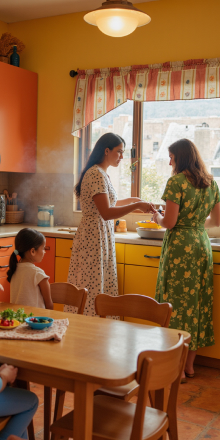

Linda's Story
LLinda's Tex-Mex Diner is built on a rich family legacy that began decades ago with a humble tortillería started by Linda’s immigrant parents. They poured their hearts into every tortilla, bringing the vibrant flavors of Mexico to a new community. Surrounded by the scent of fresh masa and the bustling energy of a family-run kitchen, Linda knew from an early age that she wanted to continue her parents’ hard work. Taking over the business was her way of honoring their sacrifice, ensuring that the essence of their traditions would live on for generations to come.
As the neighborhood evolved, Linda recognized that tastes and expectations had changed, and she saw an opportunity to update her parents’ beloved tortillería into something fresh and vibrant. Inspired by her family’s recipes and modern Tex-Mex trends, she reinvented the space with a contemporary look and a dynamic menu that combined tradition with creative twists. Her goal was to appeal to both the longtime locals who cherished the past and the younger crowd eager for something new. Today, Linda’s Tex-Mex Diner stands as a gathering spot, where every meal reflects both the heritage of Mexican cuisine and the exciting possibilities of modern dining.